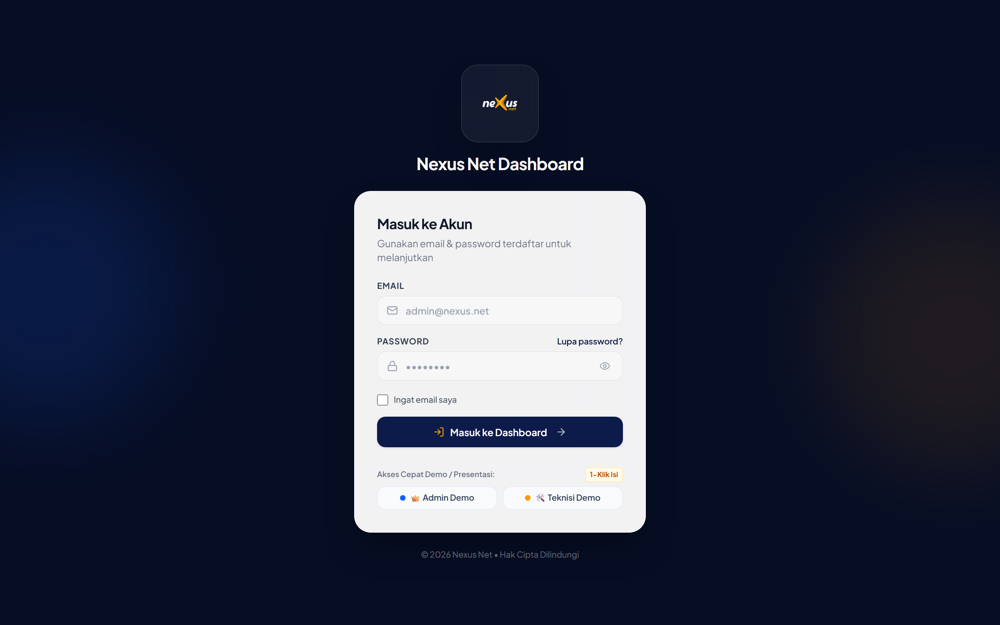
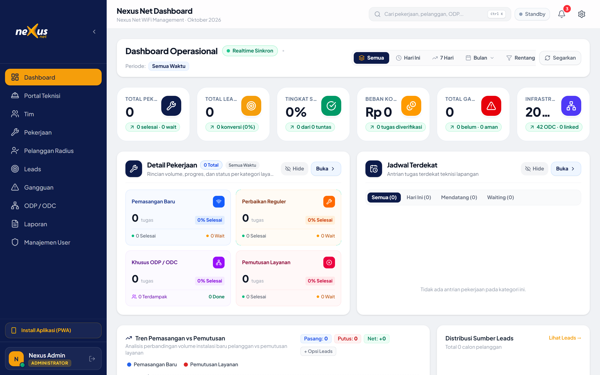
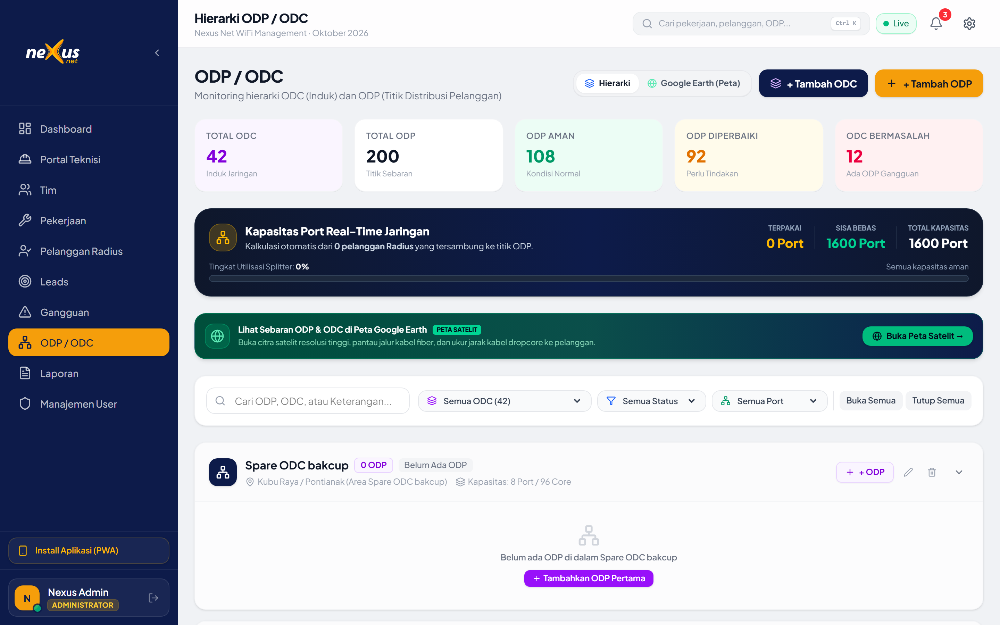
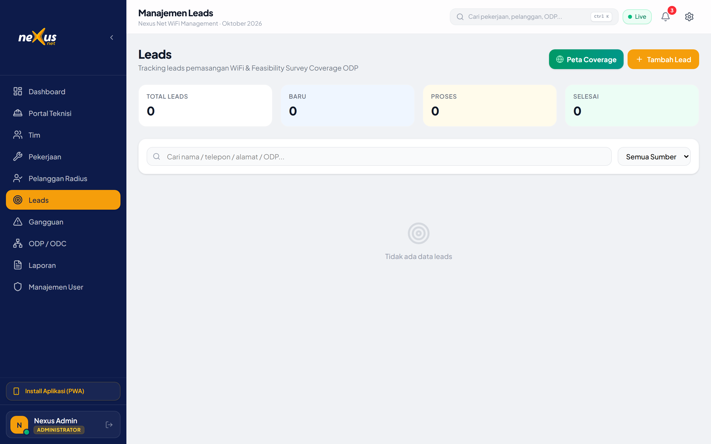
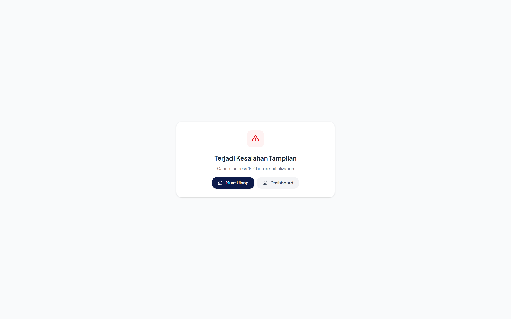
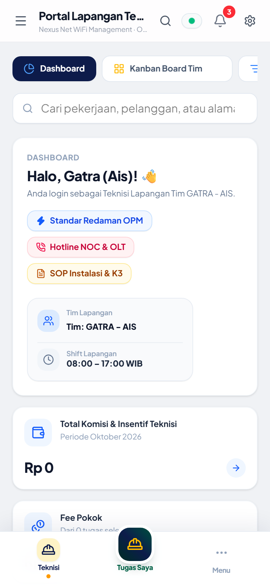
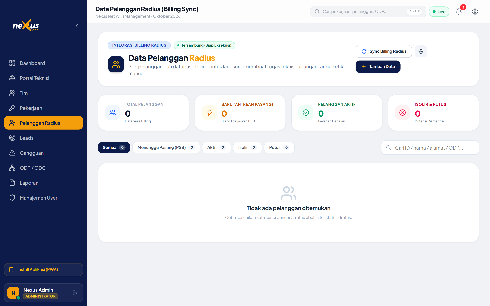
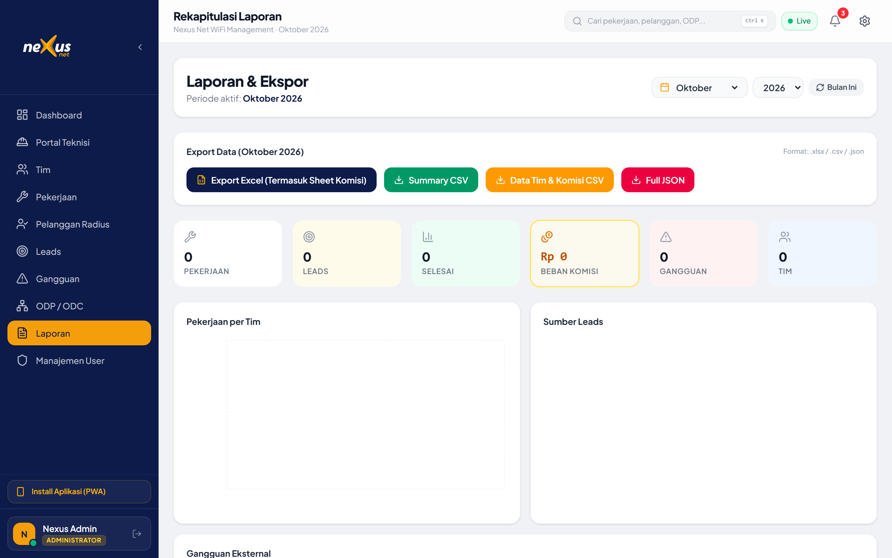

Transformasi Operasional ISP:
Dari Lead Hingga Radius Billing
Dalam Satu Ekosistem Terpadu
Mengintegrasikan GIS Google Earth topologi optik, SPK WhatsApp otomatis, Portal PWA teknisi ber-watermark GPS & OPM redaman, hingga auto-sync akun PPPoE Mikrotik.
Mengapa ISP Membutuhkan Nexus Net?
Solusi atas kebocoran pendapatan, komplain redaman jelek, dan koordinasi lapangan yang lambat.
Cara Konvensional (Sebelumnya)
Manual, Terfragmentasi & Rawan Human Error
• Data port ODP di Excel sering tidak sinkron dengan fisik tiang (over-capacity).
• SPK disebar manual via grup WA tanpa deteksi bentrok jadwal.
• Teknisi serah terima tanpa bukti OPM (redaman > -25 dBm bikin komplain sering).
• Admin input ulang data pelanggan ke Mikrotik Radius di malam hari.
Standar Nexus Net (Sekarang)
Terkoneksi Otomatis & Terverifikasi Real-Time
• Port ODP otomatis terisi & terkunci saat tugas teknisi berstatus SELESAI.
• Barometer OPM mewajibkan angka redaman optik valid dengan indikator visual.
• Foto bukti di-watermark koordinat GPS, timestamp WIB, dan barcode modem.
• Akun Radius PPPoE langsung aktif detik itu juga tanpa sentuhan admin.
Perbandingan Waktu Siklus Pasang Baru (Menit)
Autentikasi Terproteksi & 1-Klik Akses Demo
Role-Based Access Control (RBAC) membatasi privilese Admin, Dispatcher NOC, dan Teknisi Lapangan.
Multi-Role Granular Access
Memisahkan wewenang secara ketat. Admin memiliki hak penuh konfigurasi server, tim, dan finansial; sementara teknisi hanya dapat melihat portal tugas regu lapangannya.
1-Klik Quick Fill Credentials
Tombol instan 👑 Admin Demo dan 🛠️ Teknisi Demo memudahkan perpindahan peran dalam hitungan detik tanpa repot mengetik email/password.
Session Resilience & Fallback
Dilengkapi auto-recovery session di local storage sehingga pengguna tidak terlempar keluar saat jaringan internet goyang.

Dashboard Eksekutif & Real-Time Status
Visibilitas menyeluruh atas metrik utama: Utilisasi port ODP, gangguan aktif, beban teknisi, dan pendapatan.
Kartu KPI Ringkas & Akurat
Menampilkan total pelanggan aktif Radius, kapasitas sisa port ODP di seluruh wilayah, tiket gangguan berjalan, dan rasio pengerjaan hari ini.
Indikator Sinkronisasi Real-Time
Lampu badge hijau berdenyut di header menandakan koneksi websocket Supabase aktif. Setiap perubahan di lapangan langsung terpantau seketika tanpa refresh halaman.
Monitoring Beban Kerja Regu
Dispatcher dapat langsung melihat regu teknisi yang sedang *idle* (siap ditugaskan) vs yang sedang berada di lokasi pengerjaan.

GIS Google Earth & Animasi Denyut Laser
Visualisasi interaktif hierarki FTTH: OLT Kantor Pusat ➔ Feeder ➔ ODC ➔ Kabel Distribusi ➔ ODP ➔ Dropcore ➔ Rumah Pelanggan.
Animated Laser Signal Pulse
Jalur serat optik divisualisasikan dengan animasi pulsa laser 60 FPS pada layer SVG berakselerasi GPU. Memberikan gambaran nyata arah aliran bandwidth internet.
End-to-End Spotlight Path Tracing
Klik pada ODP atau rumah pelanggan mana saja, peta akan menyorot silsilah jalurnya ke belakang hingga ke OLT Kantor Pusat dengan estimasi link budget redaman (dBm).
Inspeksi Kapasitas Port Tiang
Klik tiang ODP untuk melihat kapasitas port (misal 6/8 terpakai), nama-nama pelanggan yang tercolok pada port tersebut, dan port cadangan yang tersedia.

Akuisisi Leads & Simulasi Survey 3D
Uji kelayakan pasang baru otomatis: Kalkulasi jarak dropcore, auto-matching ODP terdekat, dan estimasi redaman.
Auto Match ODP Terdekat
Saat koordinat rumah dimasukkan, sistem otomatis mencari ODP dengan port kosong terdekat (radius < 250m) dan mengukur jarak bentangan kabel dropcore.
Estimasi Redaman Otomatis (Loss dBm)
Menghitung loss redaman optik berdasarkan panjang tarikan kabel dan rasio splitter sebelum teknisi diberangkatkan ke lokasi.
1-Klik Konversi Menjadi SPK
Setelah survey dinyatakan FEASIBLE, admin cukup klik satu tombol untuk membuat Surat Perintah Kerja (SPK) tanpa mengetik ulang data calon pelanggan.

Kanban Pekerjaan & Dispatching WhatsApp
Manajemen penugasan visual dengan pencegahan bentrok jadwal dan notifikasi otomatis ke ponsel teknisi.
Kanban Board Responsif
Kolom tahapan yang jelas: Menunggu Dispatch ➔ Ditugaskan ➔ Sedang Dikerjakan ➔ Selesai. Dilengkapi filter regu teknisi dan tipe tugas (Pasang Baru, Gangguan, Maintenance, Dismantle).
Generator SPK WhatsApp Otomatis
Memformat pesan tugas resmi berisi: Nomor SPK, nama pelanggan, kontak WhatsApp, paket internet, lokasi Google Maps, dan ODP target yang siap dikirim sekali klik.
Collision Prevention Warning
Mencegah regu teknisi yang sama ditugaskan pada dua lokasi berbeda dalam jam yang bersamaan, menjaga SLA dan keselamatan kerja.

Portal Lapangan Teknisi: OPM Barometer & SOP K3
Antarmuka khusus ponsel pintar teknisi yang ramah jempol, hemat kuota, dan tangguh di area blank spot.
Barometer OPM Redaman Dinamis
Teknisi memasukkan hasil ukur Optical Power Meter. Sistem memberi feedback visual instan:
🟢 Optimal (≤ -22 dBm) | 🟡 Standar (-22 s/d -24 dBm) | 🔴 Buruk (> -24 dBm).
Mencegah serah terima sebelum sambungan redaman benar-benar bagus.
Watermark Geotag Kamera Otomatis
Foto bukti instalasi langsung dibubuhi stempel permanen: Koordinat GPS presisi, tanggal & jam WIB, nama tim teknisi, serta ID Pelanggan sebagai bukti audit fisik anti-rekayasa.
Offline Queue Resiliency
Jika teknisi berada di area minim sinyal, data tersimpan aman di antrean lokal perangkat dan otomatis terkirim saat sinyal kembali normal.

Sinkronisasi Radius PPPoE & Port Lifecycle
Integrasi menyeluruh: Pekerjaan tuntas di lapangan langsung mengaktifkan akun billing dan menduduki port ODP.
Auto-Creation Akun Radius PPPoE
Saat SPK ditandai SELESAI, sistem otomatis membuat kredensial PPPoE (username/password) di tabel Radius pelanggan dengan status AKTIF siap login ke Mikrotik Bras.
Otomasi Utilisasi Port ODP
Port ODP yang dipilih otomatis dialokasikan ke pelanggan tersebut, merubah kapasitas port (misal 5/8 menjadi 6/8) dan menghalangi pemakaian ganda.
Auto-Release saat Pemutusan (Dismantle)
Jika ada pekerjaan pemutusan layanan, port ODP otomatis dilepas menjadi kosong kembali dan akun Radius diisolir secara otomatis.

Laporan Kinerja & Payroll Komisi Teknisi
Perhitungan insentif otomatis berdasarkan bukti pekerjaan valid dan ekspor rekapitulasi ke Excel (XLSX).
Perhitungan Komisi Otomatis
Insentif per titik (Pasang Baru Rp 50.000 / titik, Perbaikan Gangguan Rp 25.000 / titik) langsung diakumulasikan ke masing-masing regu teknisi yang menyelesaikan tugas.
Grafik Tren Produktivitas Regu
Visualisasi leaderboard tim teraktif, rata-rata durasi penyelesaian tiket perbaikan, dan rasio komplain berulang per area.
Ekspor 1-Klik ke Microsoft Excel
Laporan komisi dan kinerja dapat langsung diunduh dalam format `.xlsx` rapi, siap diserahkan ke bagian finance/HRD untuk penggajian mingguan atau bulanan.

Pondasi Teknologi: Ringan, Cepat & Aman
Dibangun dengan standar rekayasa perangkat lunak modern untuk performa tinggi dan uptime maksimal.
Frontend Modern
React 19 + Vite 8 dengan Tailwind CSS v4. Waktu build produksi super kilat (< 0.6 detik) dan rendering komponen 60 FPS.
Real-Time DB
Supabase PostgreSQL dengan Row Level Security (RLS) dan sinkronisasi websocket instan ke semua perangkat.
PWA & Offline
Service Worker Workbox v1.3. Precache cerdas, instalasi instan Add-to-Home-Screen, dan penanganan koneksi fluktuatif.
GIS & Hardware
Leaflet GIS + citra Google Earth Satelit dengan akselerasi GPU SVG path tracing dan integrasi Mikrotik Radius API.
Nexus Net: Standar Baru Efisiensi &
Keunggulan Kompetitif Operasional ISP
Mengubah cara kerja manual menjadi ekosistem digital otomatis yang melindungi aset fiber optik, memangkas komplain redaman, dan meningkatkan kebahagiaan teknisi serta pelanggan.
Dari lead masuk hingga modem online selesai dalam hitungan jam.
SOP K3 & verifikasi OPM menjamin kualitas laser optik stabil.
Tidak ada port ODP liar atau selisih tagihan pelanggan.